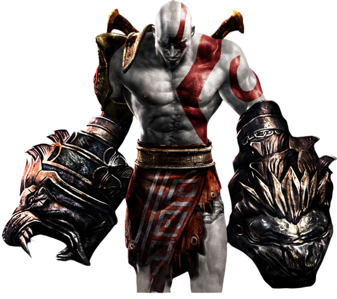
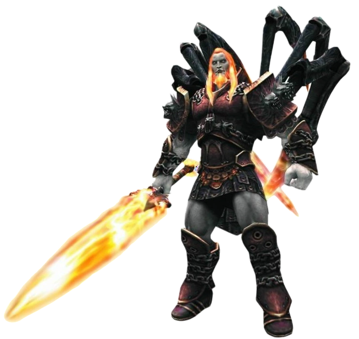
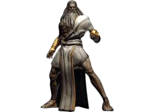
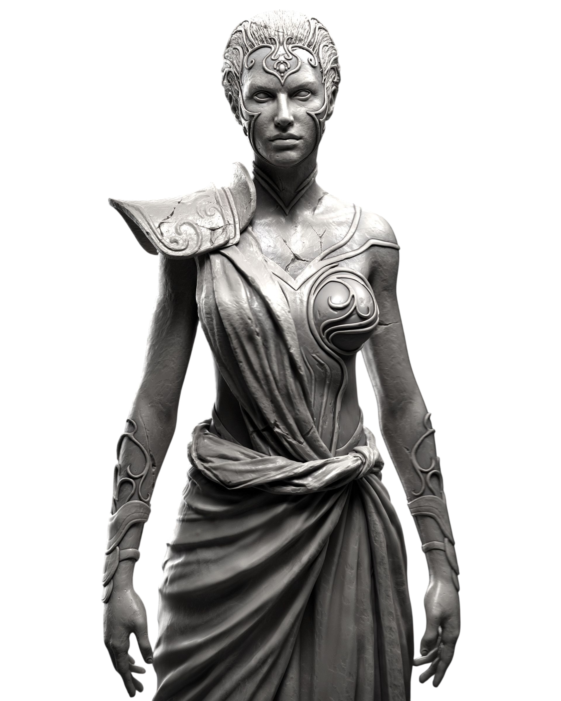
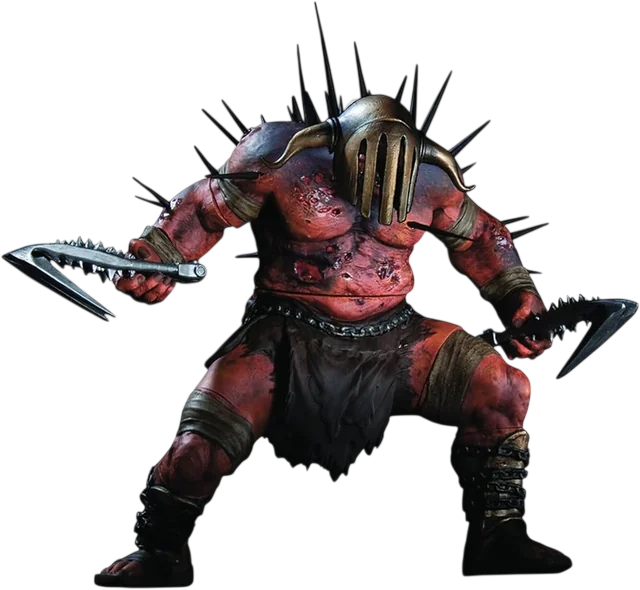
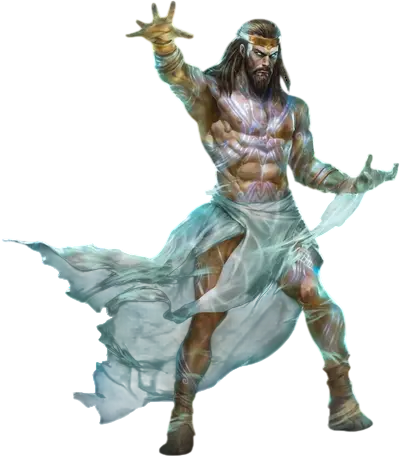
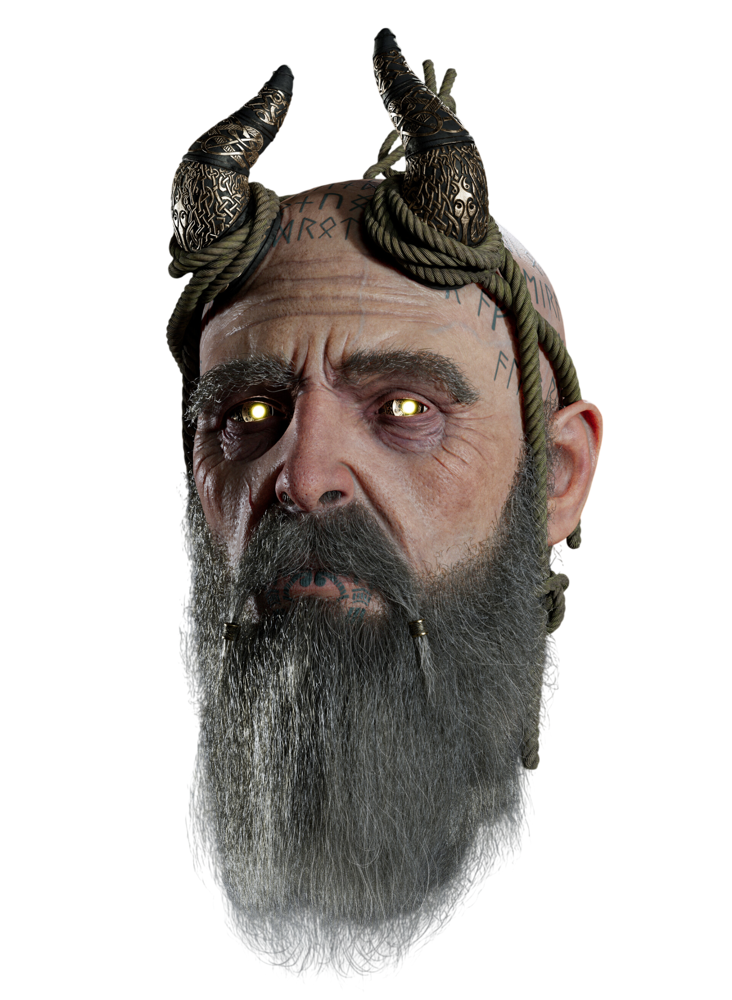
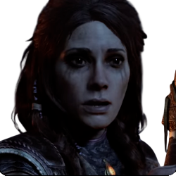
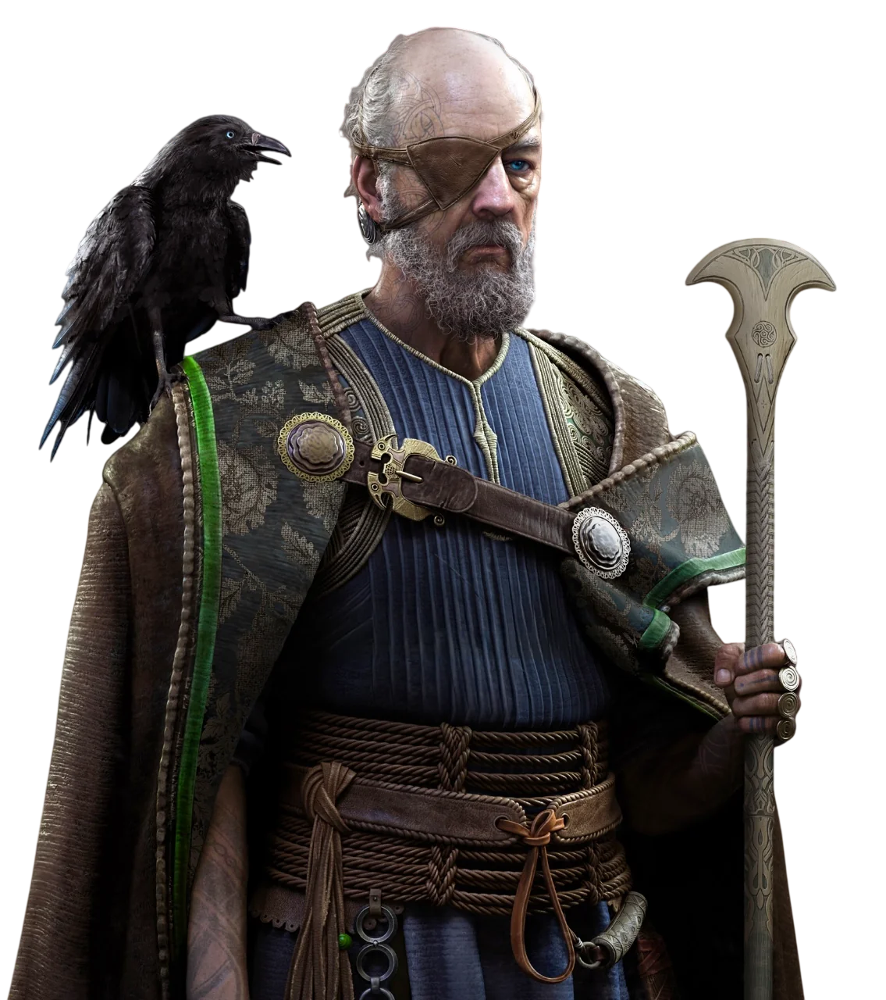

Saga Griega

Kratos
El Fantasma de Esparta. Un guerrero consumido por la venganza tras ser manipulado por Ares y perder a su familia.

Ares
Dios de la guerra. Manipula a Kratos y provoca la tragedia que define su destino.

Zeus
Rey del Olimpo. Traiciona a Kratos por miedo a su poder y desencadena su furia contra los dioses.

Atenea
Diosa de la sabiduría. Guía a Kratos en su camino, aunque con intereses ocultos.

Hades
Dios del inframundo. Enfrenta a Kratos en una batalla brutal en el reino de los muertos.

Poseidón
Dios del mar. Su caída provoca catástrofes naturales en el mundo griego.
Saga Nórdica

Kratos
Más sabio y contenido, intenta dejar atrás su pasado violento mientras cría a su hijo.

Atreus
Hijo de Kratos. Descubre su identidad como Loki y su rol en el destino de los reinos.

Mimir
El más sabio de todos. Acompaña a Kratos y Atreus con conocimiento y humor.

Freya
Diosa poderosa y madre de Baldur. Su historia mezcla amor, pérdida y venganza.

Thor
Dios del trueno. Brutal y devastador, representa una amenaza directa para Kratos.

Odin
Padre de todos. Manipulador, obsesionado con el conocimiento y el control del destino.